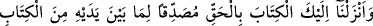
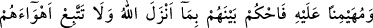
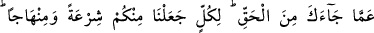
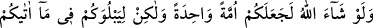
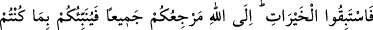
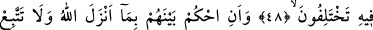
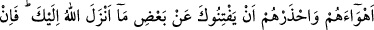
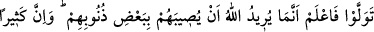
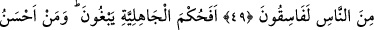
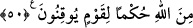

KUR’ÂN İLE HÜKMETMEK
48- Sana da, kendinden önceki kitap(lar)ı doğrulayıcı ve onları gözetleyici olarak
hak ile Kitab’ı (Kur’ân’ı) indirdik. O halde aralarında Allah’ın indirdiği ile hükmet;
sana gelen hakikati bırakıp da onların hevâ ve heveslerine uyma. (Ey insanlar!)
Her birinize bir şerîat ve bir yol verdik. Allah dileseydi sizleri bir tek ümmet
yapardı; fakat size verdiği (şerîat ve yollar) ile sizi denemek için (böyle yaptı).
Öyleyse hayırlı işlerde birbirinizle yarışın. Hepinizin dönüşü Allah’adır. O,
hakkında ihtilafa düştüğünüz şeyleri size haber verecektir.
49- Aralarında Allah’ın indirdiği ile hükmet ve onların arzularına uyma. Allah’ın
sana indirdiği hükümlerin bir kısmından seni saptırmalarından sakın. Eğer (Allah’ın
hükmünden) yüz çevirirlerse bil ki (bununla) Allah bazı günahları yüzünden onları
felâkete uğratmak istiyor. İnsanların çoğu zaten yoldan çıkmış(fâsıklar)lardır.
50- Yoksa onlar câhiliye devrinin hükmünü mü arıyorlar? Oysa yakînen bilen bir
toplum için, Allah’tan daha güzel hüküm veren kim vardır?
Ya Muhammed! “Sana da, kendinden önceki kitap(lar)ı doğrulayıcı” yani onlarda
anlatıldığı şekilde onun ineceği husûsunda kendisinden önce Allah’ın indirdiği kitap
cinsinden ne varsa onları tasdik edici; tevhid, adalet ve şerîatların temel prensiplerinde
onlara uygun “ve onları gözetleyici olarak” Yani değişmeden korunmuş diğer kitapları
kontrol edici olarak, “hak ile” hakikatle mündemiç olarak “Kitab’ı indirdik.” diğer
kitapların doğru, sahih ve sabit olduklarına şâhitlik eder, Şerîatlarının esaslarını (usûl)